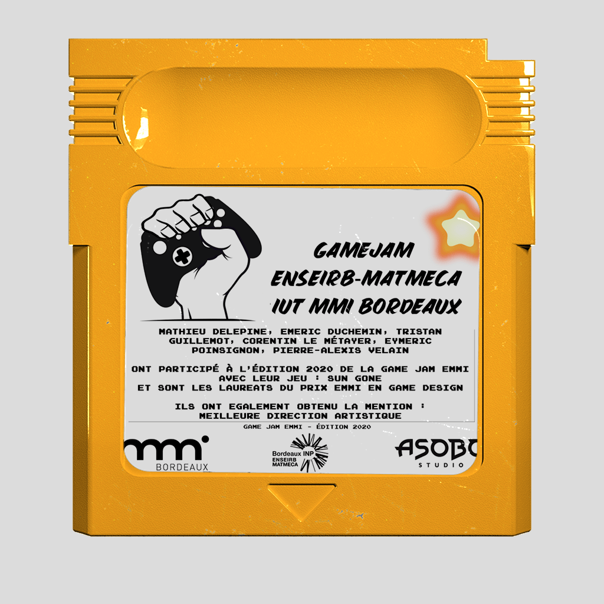
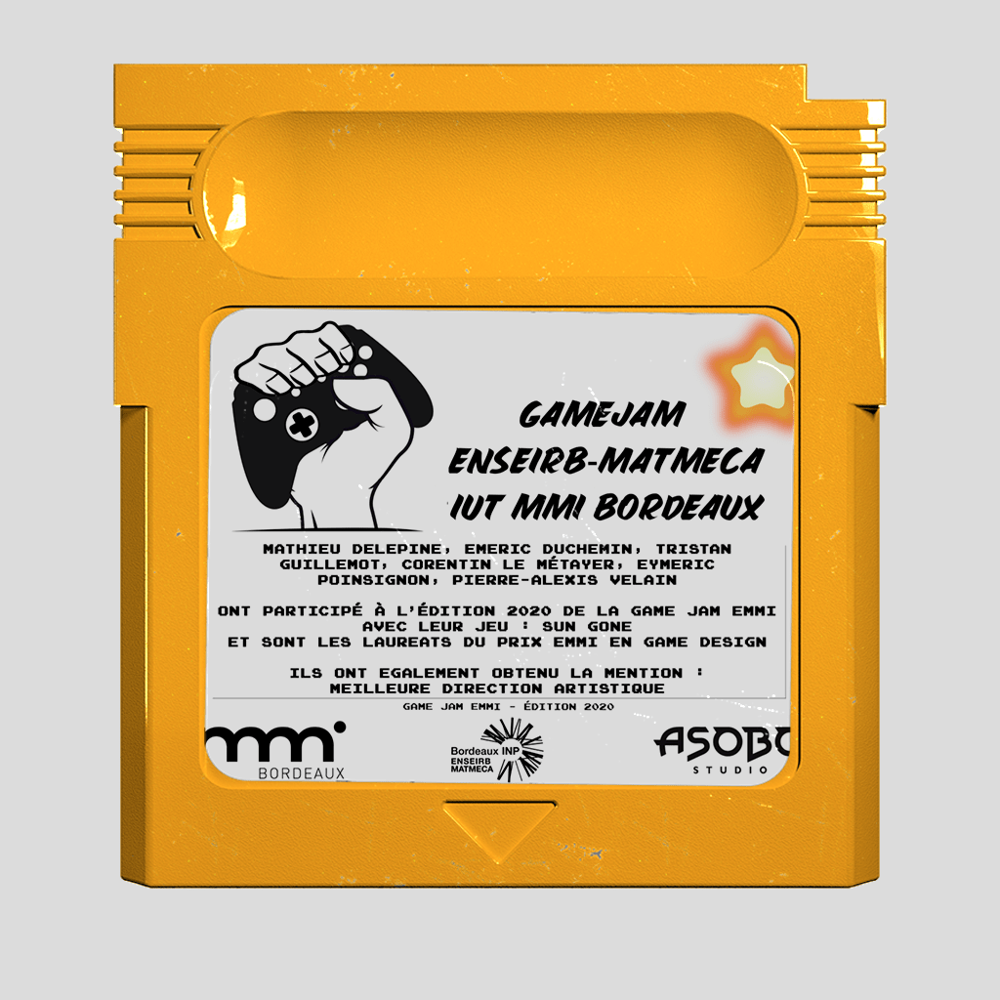

Gamejam EMMI
 

Sun Gone
Ilustration, Vidéo game, Modelisation, Level DesignLauréat de la gamejam EMMI mention meilleure direction artistique avec le jeu Sun Gone. Création d'un jeu vidéo en 48 h dans le cadre d'une gamejam organisée par MMI bordeaux, Asobo studio et l'Enseirb Matmeca.
Dans un monde plongé dans la pleine Ombre, le mal triomphe. Le soleil quant à lui fut capturé. Toi petite étincelle et dernier culte de l'humanité tu représentes le seul espoir de retrouver la lumière et sa gaieté. Résous les énigmes, défie la gravité, esquive les ennemis pour permettre au soleil de se reconstituer et de provoquer son éveil.
Durant cette Game Jam je me suis occupé de la direction artistique ainsi que du game design et du level design et enfin de la narration et du lore du jeu.